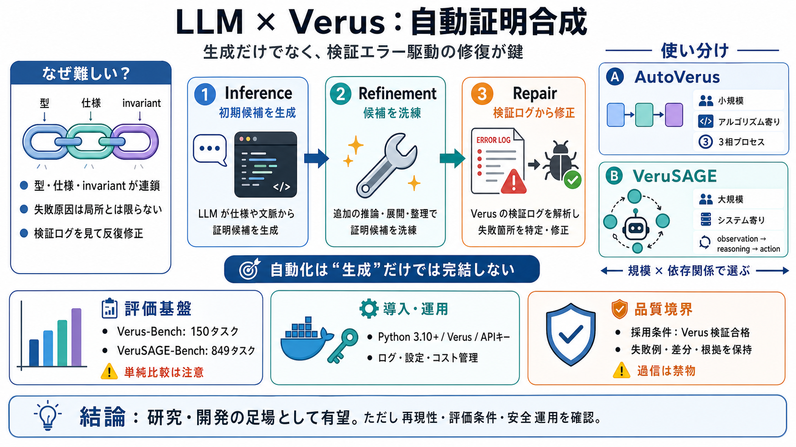

GitHub - microsoft/verus-proof-synthesis · GitHub
## Use saved searches to filter your results more quickly. # microsoft/verus-proof-synthesis. ## Latest commit. ## Repos…

## Use saved searches to filter your results more quickly. # microsoft/verus-proof-synthesis. ## Latest commit. ## Repos…
AutoVerus can automatically generate correct proof for more than 90% of benchmark tasks, with more than half of them tac…
In this paper, we present AutoVerus. AutoVerus uses LLM to automatically generate correctness proof for Rust code. AutoV…
# VeruSAGE: A Study of Agent-Based Verification for Rust Systems. This paper offers a comprehensive study of LLMs’ capab…
Our evaluation shows that AutoVerus can automatically generate correct proof for more than 90% of them, with more than h…